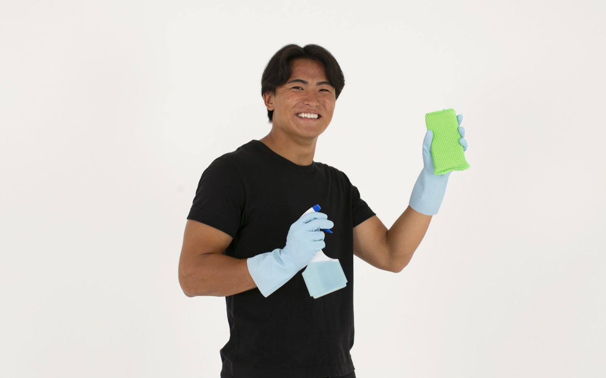
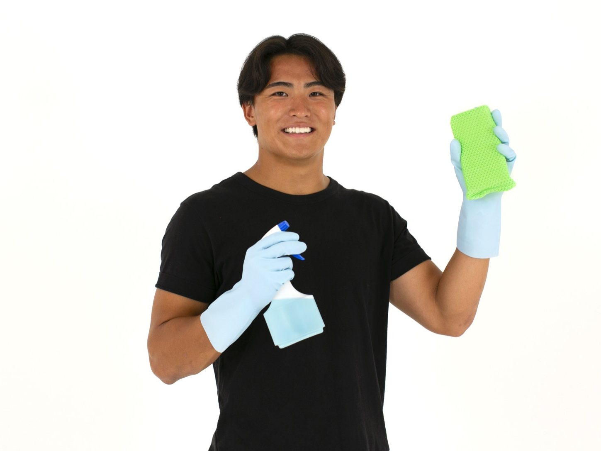

厨房清掃
全プラン共通
営業終了後の厨房を、継続的に清潔な状態へ保ちます。
- 日々の清掃では行き届きにくい箇所まで衛生的な厨房環境を維持
- 営業後の厨房を一定の品質で清潔に維持
- 継続的な訪問による衛生レベルの維持
- 専門的な衛生管理基準に基づいた品質管理
こんなお悩みありませんか？
Company
飲食店で店長として店舗運営に携わった経験をはじめ、さまざまな形で飲食店に関わり、 現場だけでなく外部からも飲食業界を見る機会がありました。
立場や業態の異なる飲食店をさまざまな視点から見ていく中で、共通して感じたのが、 営業終了後の清掃や衛生管理が、店舗で働く従業員の大きな負担になっていることでした。
料理や接客、店舗運営のために働く従業員が、営業を終えた後も店に残り、清掃を行う。 人手が足りない日も、忙しかった日も、衛生管理に必要な清掃をなくすことはできません。

「必要な清掃はなくせない。
でも、従業員がやる必要はなくせる。」
清掃を単なる店舗業務の一つとして従業員に任せ続けるのではなく、外部の仕組みとして支えることができれば、 飲食店の人件費や従業員の負担を減らしながら、衛生環境も維持できる。 現場と外部、双方の視点から飲食店を見てきたからこそ感じたこの課題を解決するために、SANIS WORKSを立ち上げました。
SANIS WORKSが解決したいのは、単なる店舗の「汚れ」ではありません。 私たちが解決したいのは、清掃・衛生管理を店舗スタッフが担うことで生まれている、 人件費・従業員負担・清掃品質のばらつきといった店舗運営上の課題です。
営業終了後の清掃・衛生管理業務を外部化することで、余分な人件費を抑え、従業員の負担を軽減し、 安定した衛生環境を維持しやすい店舗運営をつくる。 そして、料理人は料理に、ホールスタッフは接客に、店舗責任者は店舗運営に。 それぞれが本来向き合うべき仕事に集中できる環境をつくること。
「清掃を従業員がやるもの」から、
「外部の仕組みで支えるもの」へ。
飲食店の閉店後業務の当たり前を変えていくことが、SANIS WORKSの目指すものです。
営業終了後の清掃残業をなくし、店舗のコストを最適化します。
スタッフは閉店後すぐに退勤。働きやすい職場づくりに貢献します。
店舗の衛生管理を、清掃業務の面から支援。安心して営業できる厨房づくりを支えます。
Service

全プラン共通
営業終了後の厨房を、継続的に清潔な状態へ保ちます。

スタンダードプラン以上
清掃にとどまらない、HACCPに沿った継続的な衛生管理サポート。
Plan
店舗の規模・ご予算に合わせて選べる3つのプラン
業界最安級
月額45,000円（税込）
月2回訪問
人気No.1
衛生管理サポートで差がつく
月額85,000円（税込）
週1回訪問（月4回）
毎日最高の厨房環境を維持したい店舗へ
料金：ご相談
毎日訪問
Reason
閉店後の清掃をプロに任せることで、残業代・深夜手当を削減できます。
スタッフは営業に集中。清掃疲れによる離職リスクも軽減します。
単発の清掃ではなく、定期訪問で常に清潔な状態をキープします。
義務化されたHACCPに沿った衛生管理を、清掃業務の面から支援します。
担当者やその日の忙しさに左右されない、一定品質の衛生環境を提供します。
まずはお気軽にご相談ください。
店舗に合わせた最適なプランをご提案します。
Contact
ご相談・お見積りは無料です。
公式LINEより、お気軽にお問い合わせください。